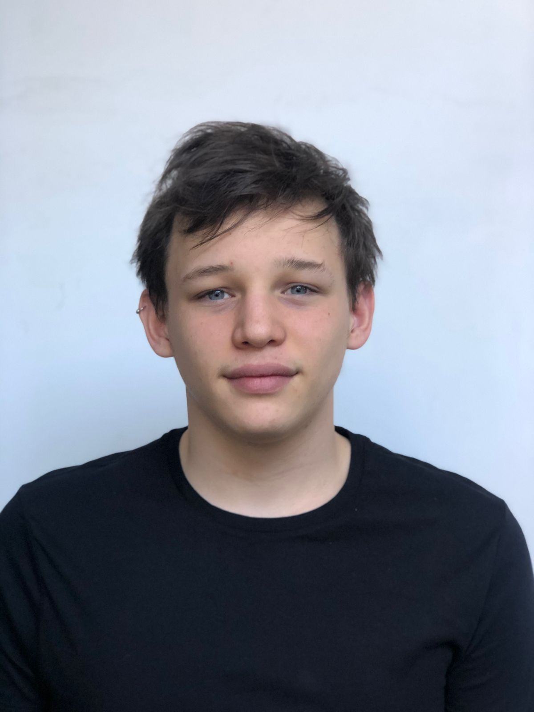

Soy Desarrollador Front End
Soy un desarrollador front end apasionado por crear experiencias de usuario intuitivas y atractivas. Con un enfoque en HTML, CSS y JavaScript, me especializo en diseñar y desarrollar interfaces modernas y funcionales. Mi objetivo es combinar diseño visual y eficiencia técnica para construir sitios web responsivos que se adapten a cualquier dispositivo. Siempre estoy en busca de nuevos desafíos y oportunidades para perfeccionar mis habilidades y aportar valor a cada proyecto en el que trabajo.
I am a front-end developer passionate about creating intuitive and engaging user experiences. With a focus on HTML, CSS, and JavaScript, I specialize in designing and developing modern and functional interfaces. My goal is to combine visual design and technical efficiency to build responsive websites that adapt to any device. I am always seeking new challenges and opportunities to refine my skills and add value to every project I work on.
